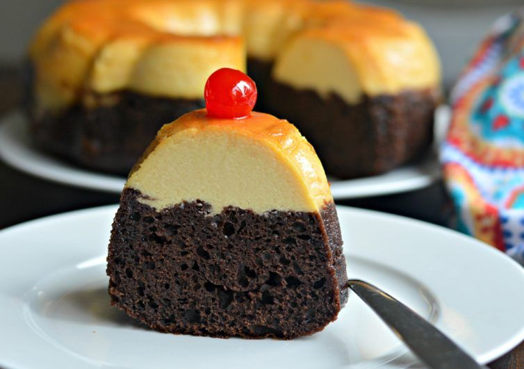
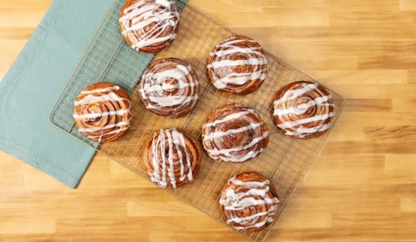

Lo más nuevo
Tiramisú Tradicional
María González

Cheesecake de Fresa
Carlos López

Chocoflan
Ana Martínez
Flan Casero
Roberto García
Recomendado

Mousse de Chocolate
Patricia Ruiz

Roles de canela
Franco Delgado
Pastisetas
Sophia Martín
Lo más popular

pastel Tres Leches
Laura Fernández

Pie de Limón
Diego Sánchez
Torrejas de nata
Valentina Cruz

Helado Casero de Vainilla
Miguel Vargas